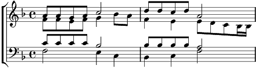

Bleu et blanc
Fa majeur
Paroles: Maurice Carême
Musique: Michel Waeber

[Soprano] Un petit chat bleu
Semé de pois blancs
Vit un gros rat blanc
Semé de pois bleus.
Leurs mignonnes queues
Différaient de peu.
[Alto] Oui, mais seulement
Le nez du chat bleu
Etait tout tout blanc,
Le nez du rat blanc
Etait tout tout bleu. Etait bleu.
Leurs joues et leurs yeux
Différaient de peu.
[Ténor] Oui, mais seulement
Un cil du chat bleu
Etait tout tout blanc,
bleu blanc bleu blanc bleu blanc
Un cil du rat blanc
Etait tout tout bleu.
Un cil du rat blanc
Etait tout bleu tout bleu.
[Basse] A cause de ce peu,
De ce tout petit peu,
De ce tout petit peu
De blanc et de bleu,
Ils continuèrent
A se faire la guerre.